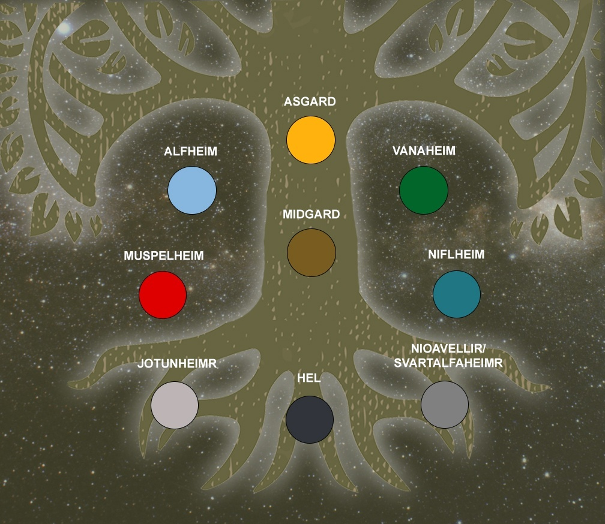
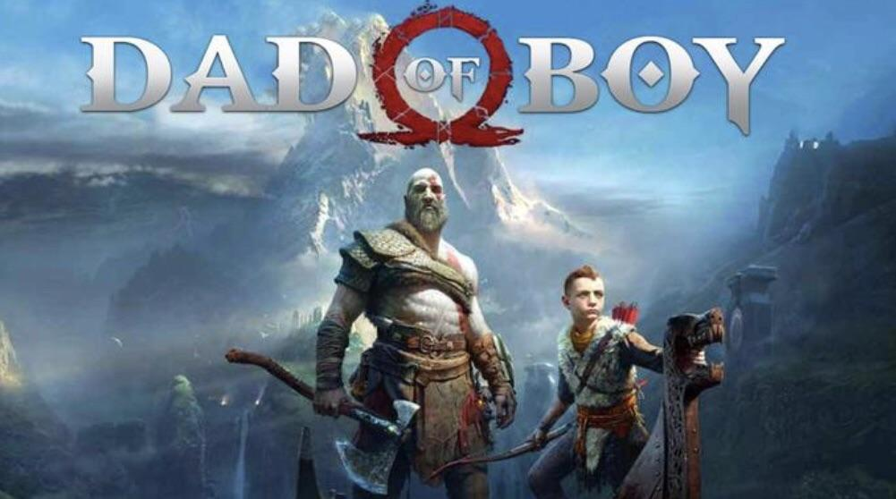
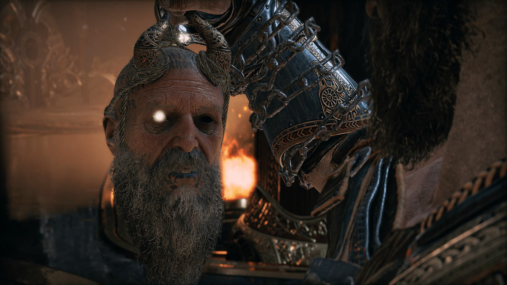
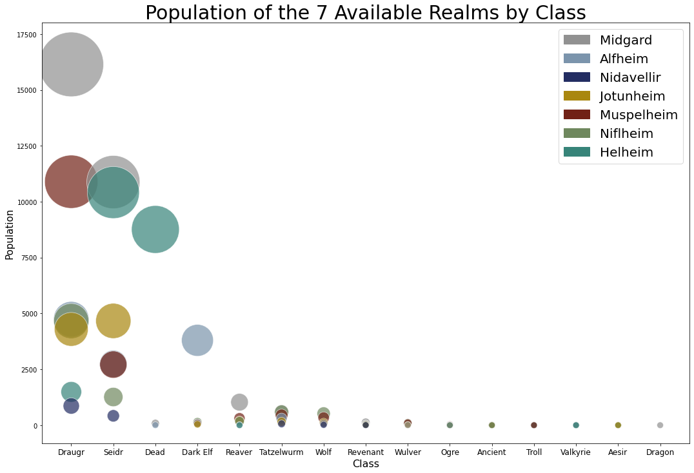
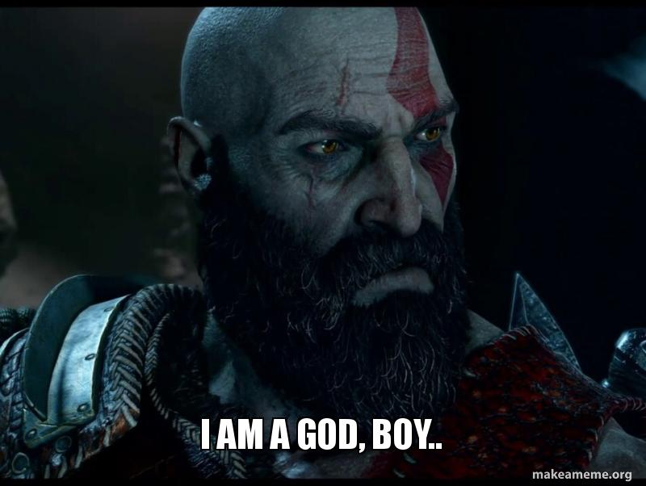
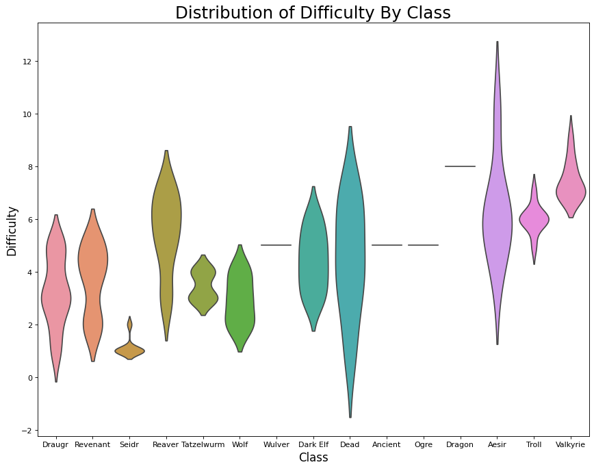
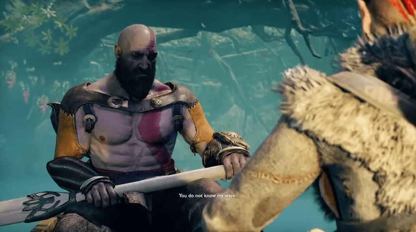
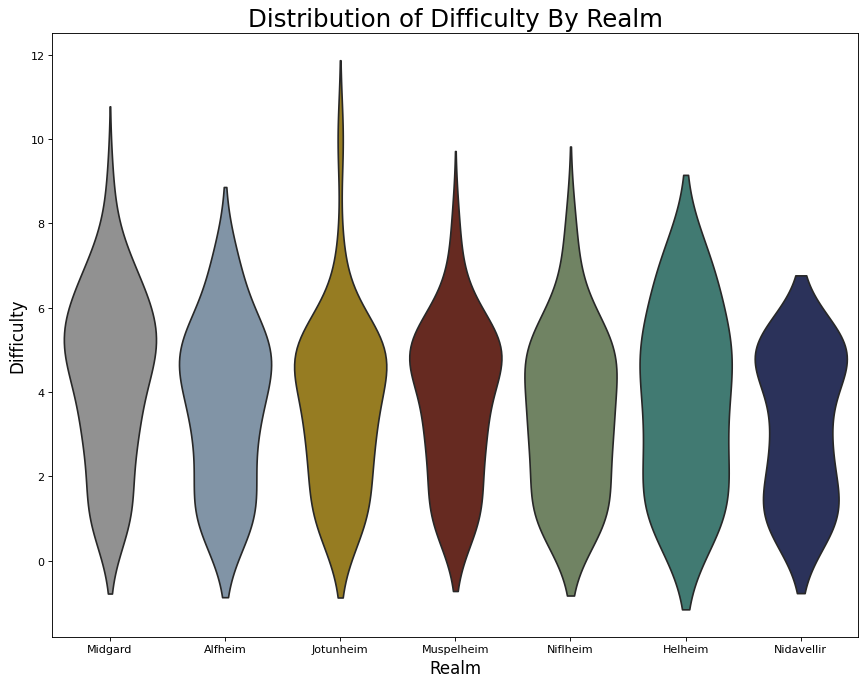
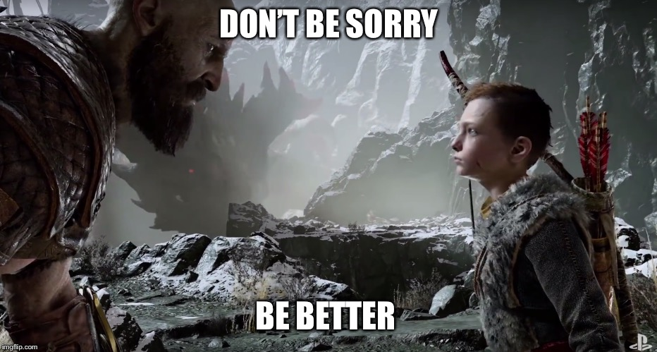
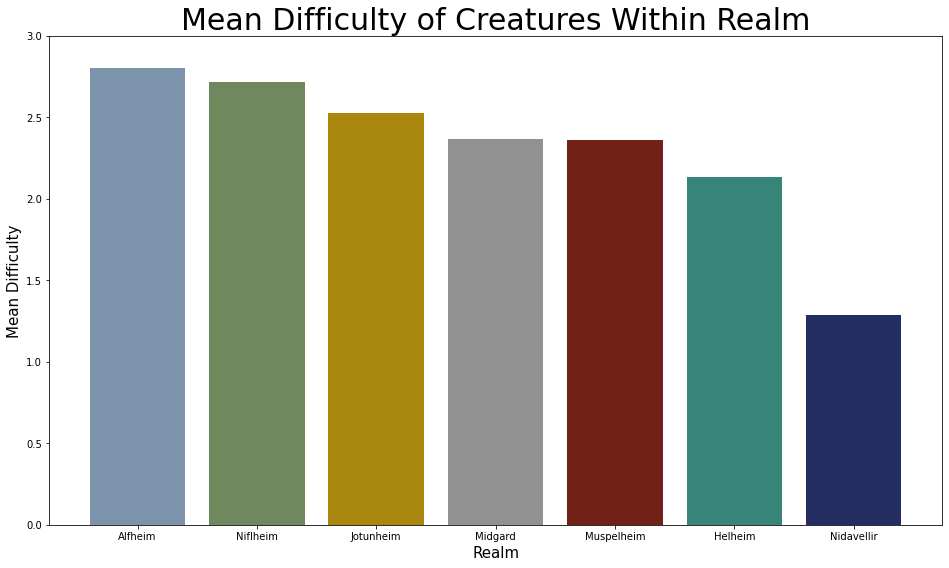

The Monsters Under Your Bed And Where To Find Them
An Analysis Of The 9 Realms of Yggdrasil And Where You're Sure To Meet Odin's Wrath
A DAD AND HIS BOY
During a time of global fear and uncertainty, many of us turn our thoughts towards those of fantasy and legend. A plane of existence ruled by stories and myths, feeding our imaginations and transforming our four walls into the kingdom of Gods! Having been plagued with the thirst for such an experience,I, as many before me (since 2018), turned to the legend of a God in a foreign land. A God who is mourning the loss of his only solace while, in turn, nurturing the fruit of that solace. His is a story of valor, duality, and potential amnesia. A story of a father and son. A story of a God...and his boy.
Yggdrasil, the "World Tree", is known to some as the "Realm Between Realms" (or at least according to Mimir, but more on him later). What is common knowledge to the inhabitants of its worlds is that its nine branches cradle the realms they call home, and for most that knowledge was enough and mostly forgotten. However, the presence of an "utlending," an outside, has created quite the disturbance among the Gods of these realms. Fierce beasts from ever corner of every realm unknown to the layman have begun appearing in less than favorable places, creating disorder and threats that most only heard of in tales and myths of valor. Now that the realms have become entrenched in disarray, it is time for Kratos and Atreus to answer a very important question. Which realm poses the biggest threat?
STRENGTH IN NUMBERS
How do two heroes, one seemingly without a name, begin to fathom the sheer number of monsters they will face in Midgard alone, much less the rest of the realms? Well, that's where Mimir comes into play. Once a counsel to Odin himself, Mimir now aids Kratos and boy on their journey through Yggdrasil. Thankfully, he doesn't take up much space:
You could say he's a-HEAD of the game. But for what he lacks in body he makes up for in knowledge. All knowledge, in fact. So Mimir has done the lads a favor and but together a few visualizations that might help Kratos better comprehend the situation (you don't get to the Carnagie Hall of skull-smashing by doing too much book-learning after all).
A good place to start is by understanding the populations of the realms themselves, and for that Mimir threw together a simple, yet elegant, scatter plot to display the distribution of creatures spread across Yggdrasil by realm.
I know, I know, Yggrdasil has 9 realms. However, Odin has sealed off the entrance to Asgard and Vanaheim. He also managed to seal off Nidavellir, though the Dwarves seem to have their own way of travelling through realms. In any case, the individual types of abominations across the nine realms that wish to tear ones face off, or eat their liver Prometheus style, can go into the hundreds. Thankfully, they can be easily categorized into 15 classes:
- Draugrs
- Seidr (Created from magic)
- The Dead (That is, mostly dead)
- Dark Elves
- Reavers
- Tatzelwurms
- Wolves
- Revenants (Witches)
- Wulvers (Werewolves)
- Ogres
- Ancients (Existing since the beginning of time)
- Trolls (Different from Ogres)
- Valkyries
- Aesir (A class of God)
- Dragons
And though they vary in size, shape, and form, they all want to kill you. So, where could we surmise is an area of high risk by looking at this technologically improbable visualization Mimir has conjured? Going by this graph and this graph alone, it seems like there are three realms with the highest concentration of enemies: Midgard, Muspelheim, and Niflheim, with Jotunheim trailing in an arguable fourth place. Atreus is understandably shook by this information, as they live in Midgard. Kratos, on the other hand seems to shrug this information off.
Fair.
A DIFFICULT SITUATION
However, Mimir reminds the two that population is not the only factor that births danger. Sure, these three realms have over ten thousand enemies within their borders, but it's worth pointing towards this next visual:
If we compare this distribution to our population plot we can deduce that though there are legions of Draugrs in Midgard, Niflheim, and Muspelheim. However, Draugrs are also not terribly difficult. Not to say that there isn't strength in numbers.
Very well. But it's worth exploring the potentiality of danger regardless. So let's take a look at what the distribution of potentially difficult enemies throughout the realms looks like these days:
Not bad. Not great either, but it seems that the areas of denser distribution seem to fall somewhere around the middles. Except for Hel of course, that seems to be very evenly distributed. But what can you expect from the realm of those not worthy enough to die and make their final trek to the halls of Valhalla? Speaking of Valhalla, it seems the Valkyrie have become corporal and aggressive. Odd...
But I digress! In the end, after all, there is a simple way to determine the difficulty of surviving in any particular realm based on the threat level these creatures pose. I'm almost sorry I didn't realize it sooner, but as they say "knowledge is power," and we certainly have a great deal of that now!
Riiiiiiiight...well...in that case let's move on. The next visualization will sum everything we've gathered up rather nicely!
A MEANS TO AN END
